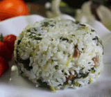

菜名：咸肉菜饭
市场价格：15
会员价格：12
配料：咸肉、青菜、米饭
菜品类型：炒饭
做法：
1.咸肉一块（泡开），上海青适量。
2.咸肉切小丁，上海青切段（梗切小点，叶子切大点）。
3.生姜用擦成末，用少许水浸泡。（咸肉有一股咸肉的腥味，所以要去掉）。
4.锅里不放油，中火煸炒咸肉，直到干松，泼上点生姜水，两汤匙油，继续炒，炒到咸肉全身都沾上油以后开大火，把青菜放进去，翻炒几下（千万别久了，不能出水。青菜上沾了油即可。
5.长粒糯米和普通米一比一混合，淘洗干净。把炒好的咸肉和米，剩下的生姜水搅拌均匀。
6.水的比例一定要掌握好，因为青菜还要出水，所以水刚好淹没米即可，不要怕会硬放入电饭煲，按下煮饭键，等跳开后焖十分钟即可。